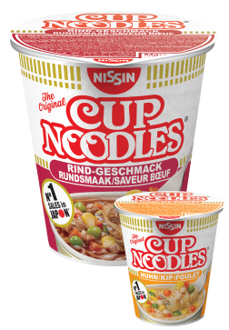
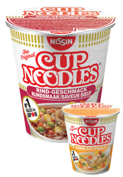

NISSINNOUILLESJAPONAISES

Élaborées à base de subtils arômes de la cuisine japonaise, ces soupes sont prêtes en 3 minutes seulement
Sept recettes savoureuses:
Poulet Teriyaki, Boeuf Sukiyaki, Crevettes Hamayaki, Légumes épicés, Pirikara, Champignons Kinoko et Curry Maroyaka.